Tønder just happens to house a museum in a water tower, called Sønderjyllands Kunstmuseum (South Jutland's Art Museum. Remember, Jutland is the part of Denmark that "juts" up from Germany). Tønder is near Møgeltønder. Møgeltønder is where the prince (the younger one, not the crown prince) lived with his wife. But they have been having trouble since I left Denmark, so oopsie.
This museum is of particular importance to those who like Danish design --- it houses one of each of Arne Jacobsen's chair designs. You want to see chairs? Go to Tønder. The place is amazing.
Okay, so the whole museum isn't in a water tower. Just the chairs. The rest of the museum houses modern and surrealist art, in a more traditional building.
Called Sønderjyllands Kunstmuseum (South Jutland's Art Museum. Remember, Jutland is the part of Denmark that "juts" up from Germany)
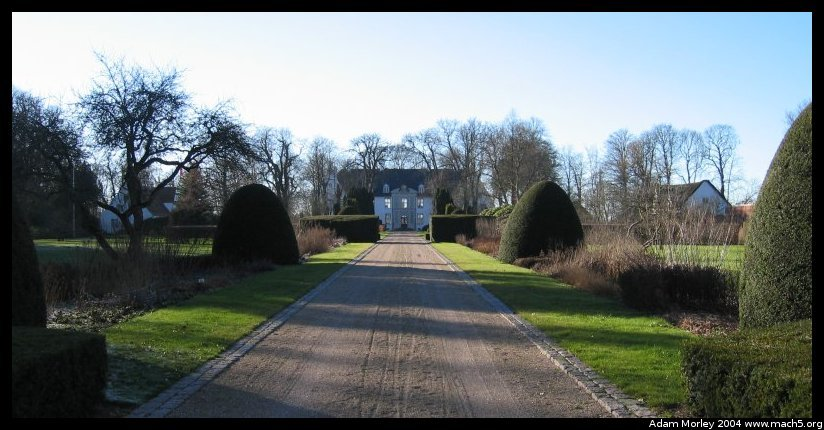 The house where the younger prince lives (at the time) with his wife. They have two rather cute children. Please note that Tønder is in Jutland (so western Denmark, far from Copenhagen). Our tour guide made mention that the whole town was quite pleased when they learned the younger prince would come and live with them.
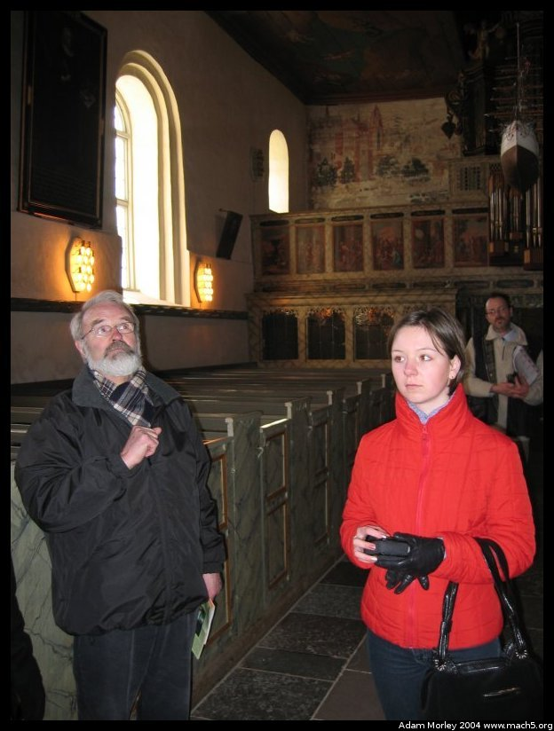
Speaking of our tour guide, there he is on the left.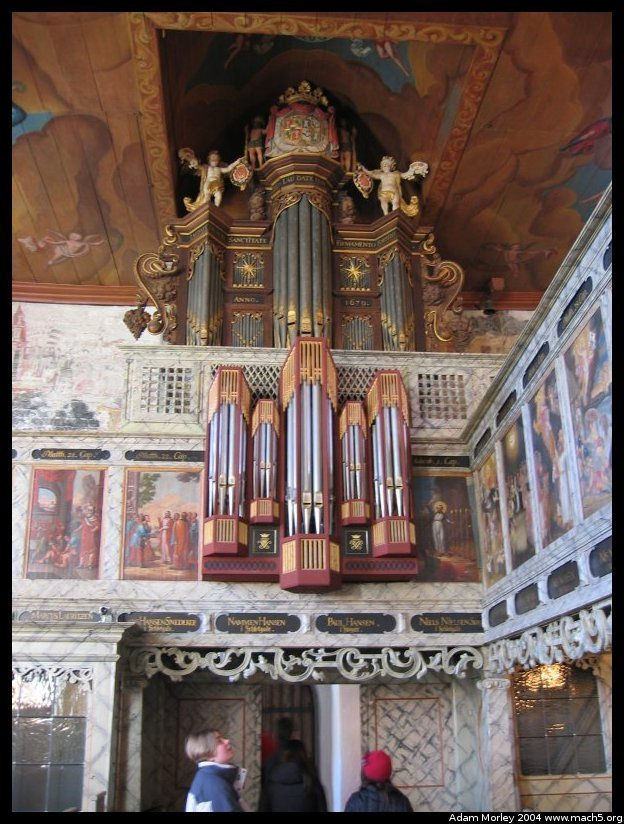
The church in Møgeltønder. A fancier Danish church. Danish churches are not Catholic cathedrals. They are much simplier. More. . .Danish.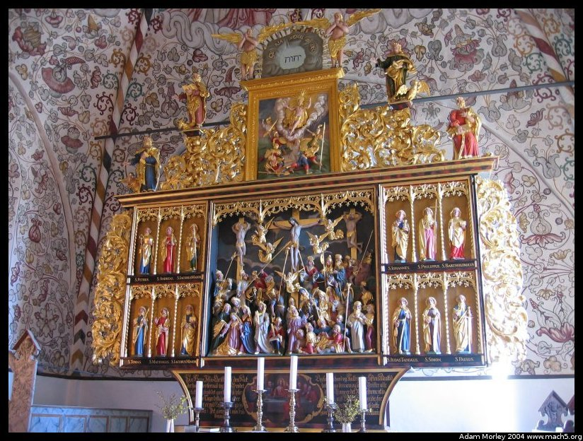
The altarpiece in the church. Hint: it's real gold.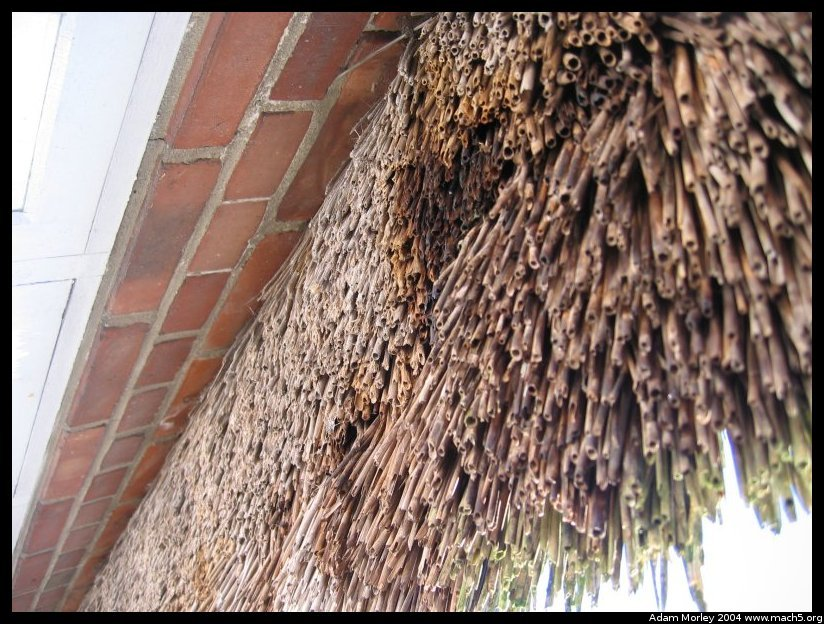
Up close and personal with one of my favorite things in Denmark: thatched roofs. I miss thatched roofs back in the USA. Heck, I miss Denmark.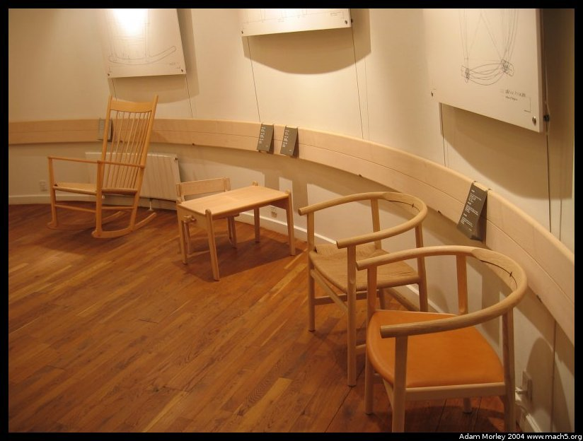
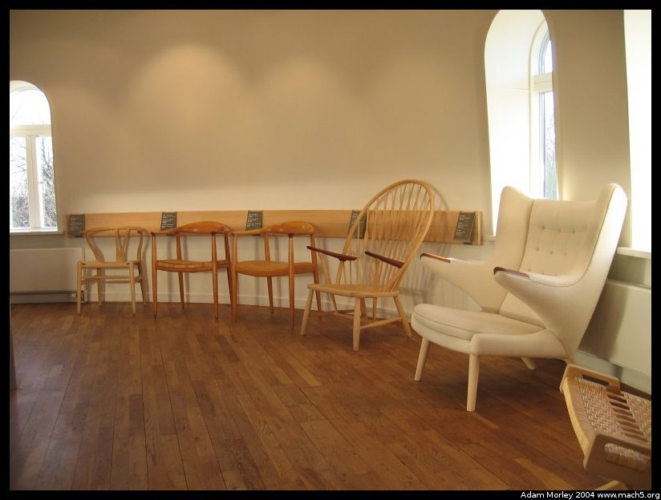
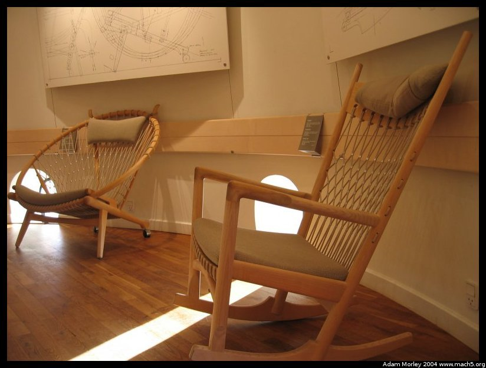
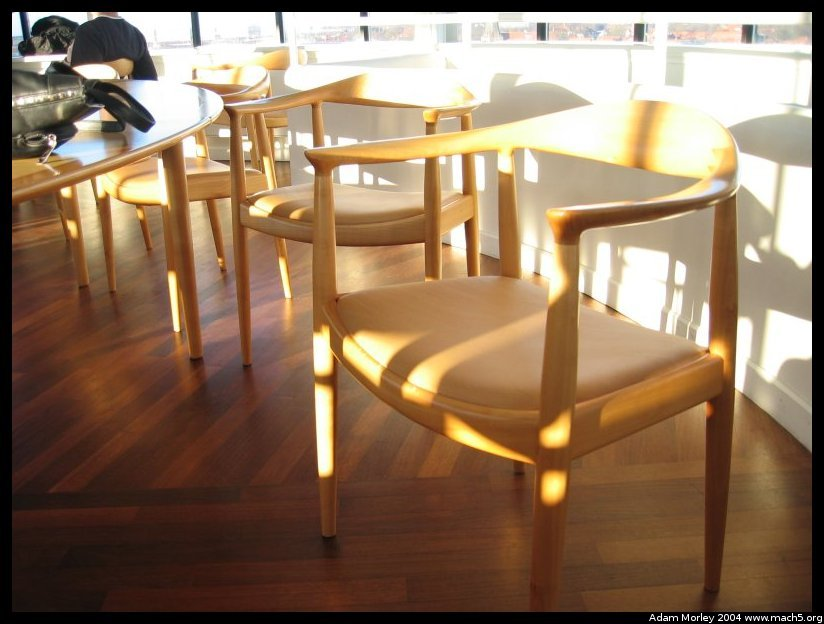
Chairs. The last one is "the" chair. I had never seen "the" chair before. I thought it would be big and showy. This is probably tied to my American upbringing. It's not. What is "the" chair? It's the one used in a debate between Kennedy and Nixon. Now you know why it's called "the" chair. The museum has about 30 or 40 of these in the top of the water tower. You are also afforded a panoramic view of the surrounding countryside.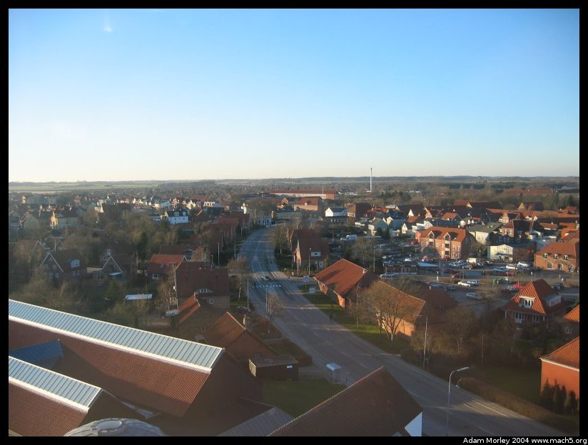
It's flat. And I decided that I needed a different camera at this point. My old photo hobby was coming back. I lacked a polarizer. I lacked complete control over depth of field. I was fed up. But I was also on a multi-day trip without an option to acquire a new camera. This would be rectified thanks to a friend who brought one over for me (thank you online shopping! taxes in DK are insane.) when she came to visit Europe. You rock Rachel.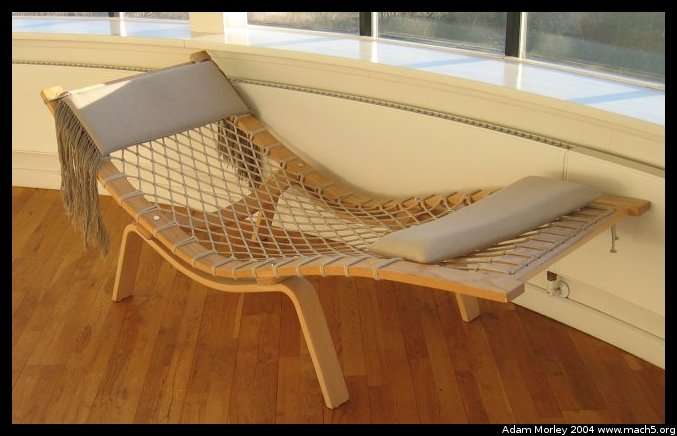
Another chair.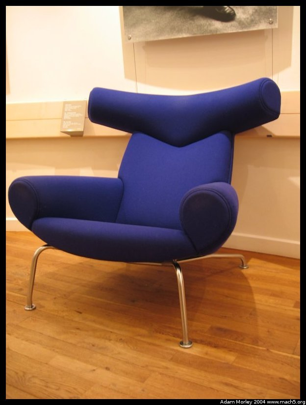
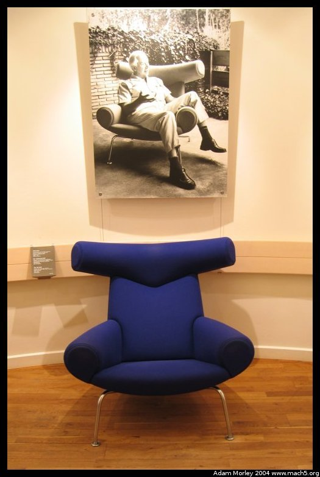
This is my favorite chair. By far. You must understand the quality of the chair. And how it fits a normal guy just right.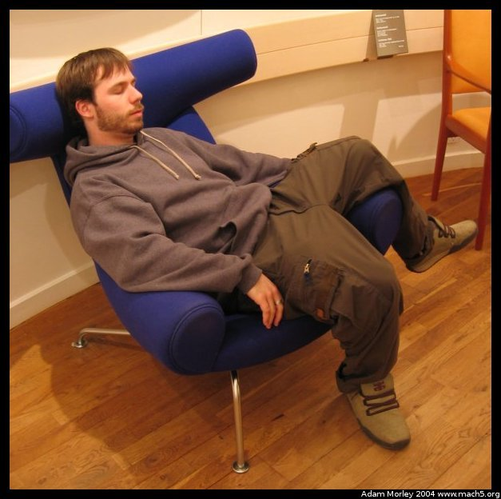
See? My friend Anna would later find out that it wasn't quite the right proportion for the shorter types (ie: under 5'6")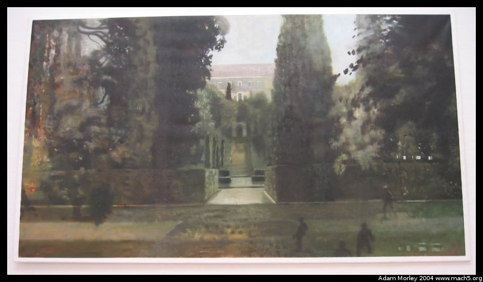
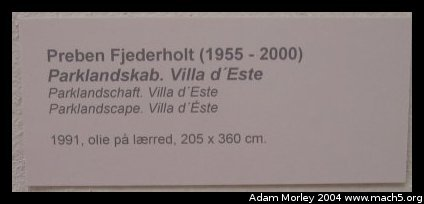
For some reason, this work just forces me to stare at it. I'm guessing the effect is different in person.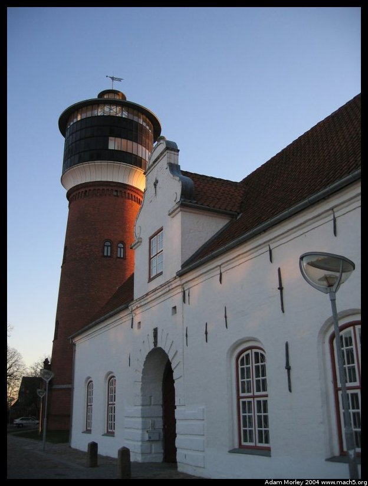
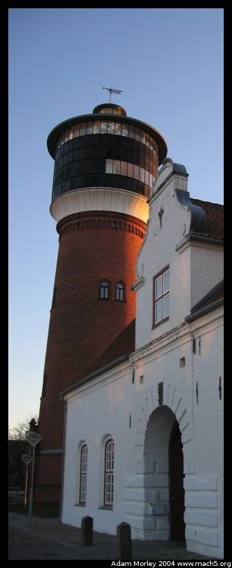
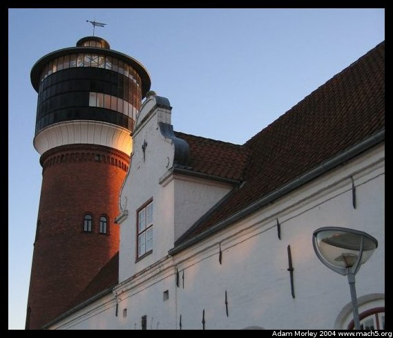
And these last two are to illustrate two things:1. You can take semi-okay pictures with point and shoot digicams. 2. You can crop. The top one is raw. The second two are cropped in different ways. They aren't neccessarily better. Perhaps worse.
Adam can be reached at adam dot morley at gmail dot com